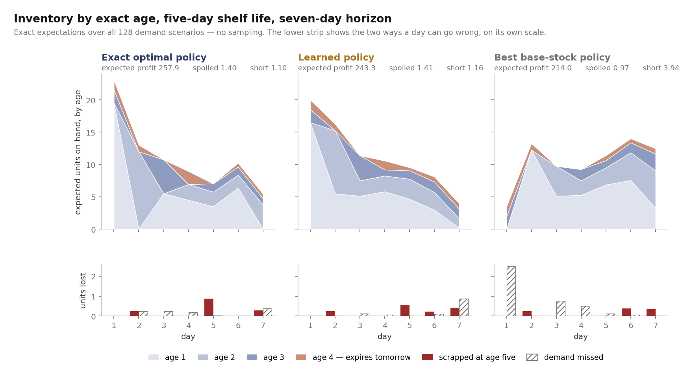
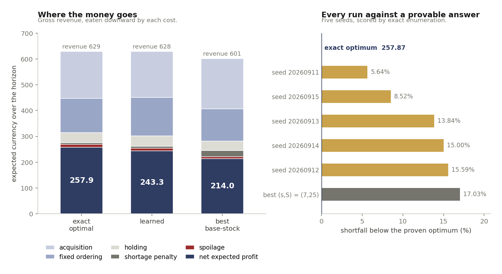
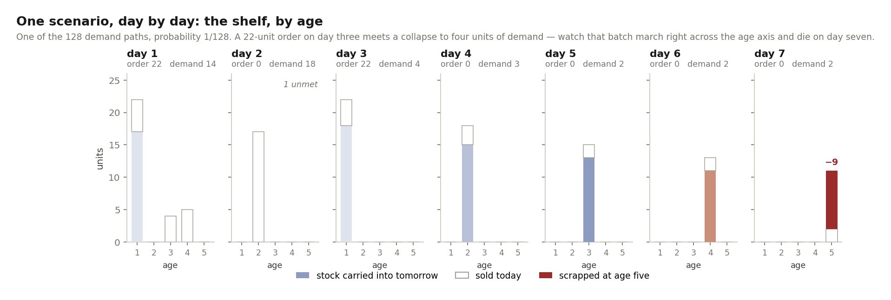

A blood bank with forty units on the shelf and a hospital with forty units on the shelf are not in the same position, and the difference is not visible in the number forty. If thirty of those units expire tomorrow, one of them is about to throw away most of its inventory and the other is comfortable. Almost every inventory model in practice reports the total anyway, and almost every replenishment rule in practice reorders off that total.
This note is about what you get back when you refuse to aggregate. Stock is carried as a vector \((n_1,\dots,n_5)\) — how many units are one day old, two days old, and so on to the day they are scrapped — and the decision is made against that whole vector. The instance is small on purpose: a five-day shelf life over a seven-day horizon, with two-point demand each day, which is 128 scenarios in total. Small enough that the exact answer is computable, which means every policy in this post can be scored against a provable optimum rather than against whichever policy happened to do best.

What this is
This is a complete, checkable treatment of one small perishable-inventory instance, written for someone comfortable reading a recursion who has never had to defend an inventory number to an auditor. There are no learned components in the baseline and no approximations in the optimum. The interesting content is in the disagreement between the three policies, and specifically in why the standard industrial heuristic loses ground it looks like it should be winning.
The model
Shelf life is \(m = 5\) days, horizon \(T = 7\) days, and the lead time is zero: an order placed for day \(t\) is on the shelf that morning as age-1 stock. Demand is non-stationary, peaking midweek and collapsing at the weekend, with two equiprobable outcomes each day. Unmet demand is lost, not backordered — the customer goes elsewhere, which is the right assumption for a product people buy fresh.
Within a day the sequence is fixed: the order arrives, demand is realised, sales are issued from stock, whatever is left at age \(m\) is scrapped, holding cost is charged on what survives, and everything ages by one day. Writing \(s_{a,t}\) for units of age \(a\) sold on day \(t\):
Arrivals enter at age one and everything else is yesterday's leftovers, one day older: \[ n_{1,t} = q_t, \qquad n_{a,t} = n_{a-1,t-1} - s_{a-1,t-1} \quad (a = 2,\dots,m) \] Sales cannot exceed stock or demand, the shortfall is lost, and age-\(m\) stock cannot be carried: \[ \textstyle\sum_a s_{a,t} + \ell_t = D_t, \qquad s_{a,t} \le n_{a,t}, \qquad w_t = n_{m,t} - s_{m,t} \] Daily profit charges a fixed cost \(K\) on any day an order is placed: \[ g_t = r\textstyle\sum_a s_{a,t} \;-\; cq_t \;-\; K\mathbb{1}[q_t > 0] \;-\; h\textstyle\sum_{a\lt m} n_{a,t}^{\text{end}} \;-\; p\,\ell_t \;-\; \omega\,w_t \]
The fixed cost is not decoration, and getting to it took three passes at the instance. Without \(K\), the optimal policy on a five-day shelf life simply orders close to just-in-time every single day, nothing ever reaches age five, and expected wastage is exactly zero — a perishable inventory model in which perishability never binds. A parameter sweep confirmed this held across every cost ratio tried: shortage penalties from 2 to 6 and wastage costs from 4 to 12 all produced the same degenerate answer. Charging \(K = 40\) per replenishment forces batching, stock gets built ahead of the midweek peak, and units that miss the peak can genuinely die. Only then is there a tradeoff worth drawing.
What is actually computed
- The exact optimum, by backward recursion over the age-vector state, evaluating 262,327 distinct \((t,\text{state})\) pairs. Demand support is finite, so \(\mathbb{E}_D\) is an exact finite sum, not a sample average.
- The same optimum, twice more, by integer programming. The deterministic equivalent is written out on the full demand tree — 255 nodes, 127 order decisions, 4,572 integer variables — and solved to proven optimality by two separately written models running on two different solvers.
- The best possible \((s,S)\) policy, found by exhaustive grid search over all \(0 \le s \lt S \le 36\), each candidate scored by full enumeration of all 128 scenarios. This is the strongest base-stock rule that exists on this instance, not a strawman.
- A learned policy, tabular over the age vector, trained from sampled episodes with no access to the transition model, across five seeds.
- Every policy scored identically, by exact enumeration of all 128 scenarios with their exact probabilities. No reported number in this post carries Monte Carlo error.
Three methods, one number
The dynamic program and the two integer programs are genuinely independent: a
backward recursion over states on one side, a flat deterministic equivalent over a
scenario tree on the other, written twice against different modelling layers. They
agree to six decimal places on an optimal expected profit of
257.867188, on a first-day order of 22 units, and on the resulting
1.3984 units spoiled and 1.1016 units of demand missed. Building both integer
programs was worth it for exactly one reason: the first version of the scenario
tree returned 238.445312, which is below the dynamic program's
answer and therefore impossible, since a correct deterministic equivalent must
match it. The bug was an off-by-one in how initial stock was aged before day one,
and nothing but a second exact method would have caught it.
Both integer programs leave issuing completely free: sales are chosen per age class and no FIFO constraint appears anywhere in either model. Their feasible sets therefore strictly contain every oldest-first plan, so their optimum must be at least the dynamic program's, which does force oldest-first. Both return exactly the dynamic program's value — a slack of \(+0.000000\). Freedom to issue any age buys nothing, which is a proof that oldest-first is optimal on this instance rather than a modelling convenience. The solver does report 14 and 21 nodes respectively where it sold a younger unit while an older one went unsold; those are ties on an alternate optimum, not improvements.

The result, and why the heuristic loses
The best \((s,S)\) policy on this instance is \((7, 25)\) and earns 213.95, which is 17.03% below optimal. The best of five learned policies earns 243.32, or 5.64% below optimal — 13.73% better than the best base-stock rule that exists here. Averaged over all five seeds the learned policy earns 227.65, still comfortably ahead of the heuristic but with a spread wide enough that reporting only the best seed would be dishonest.
The mechanism is the part worth keeping. Read the spoilage numbers and the base-stock policy looks like the careful one: it scraps 0.9688 units against the optimal policy's 1.3984. It wastes less than optimal play. It also misses 3.9375 units of demand against the optimal policy's 1.1016 — nearly four times the shortage — and that is where the 17% goes. Watching only a single scalar of on-hand stock, it cannot distinguish a shelf holding twenty fresh units from a shelf holding twenty units that expire within two days. Its only defence against spoilage is to hold less, so it holds less, and then it is empty in the middle of the week when demand realises high. The optimal policy accepts more spoilage on purpose, because a unit thrown away costs 8 while a sale missed costs 6 in penalty plus 10 in forgone revenue.

References
- Nahmias, S. (1982). Perishable Inventory Theory: A Review. Operations Research, 30(4), 680-708.
- Karaesmen, I. Z., Scheller-Wolf, A., & Deniz, B. (2011). Managing Perishable and Aging Inventories: Review and Future Research Directions. In Planning Production and Inventories in the Extended Enterprise, 393-436.
- Birge, J. R., & Louveaux, F. (2011). Introduction to Stochastic Programming (2nd ed.). Springer.